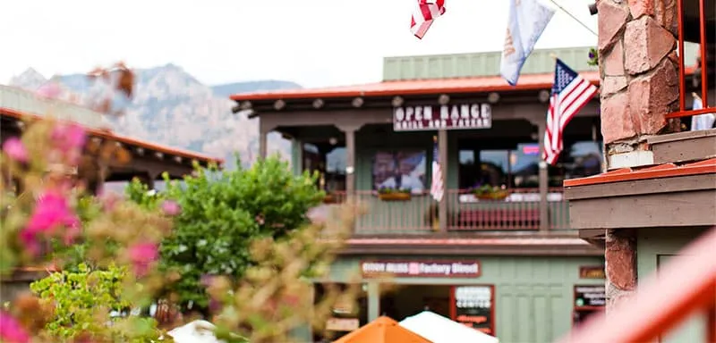
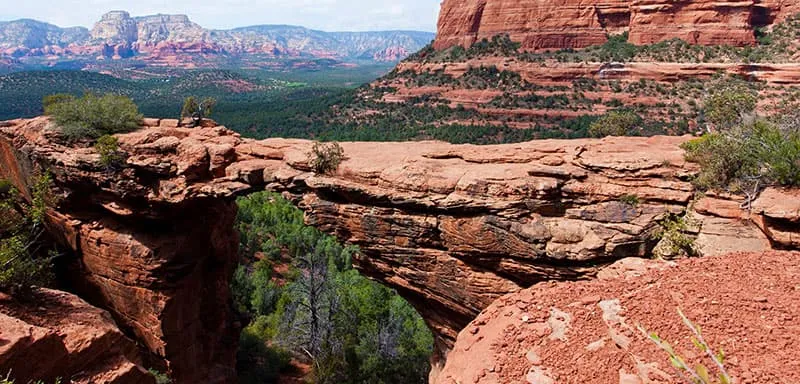

Поиск гостиницы.
Заинтересовались?Укажит1е предполагаемые даты поездки, и мы покажем вам лучшие предложения гостиниц в Седоне
Поиск гостиницы в СедонеСедона — небольшой городок в Аризоне, заслуживающий большего!
Рассмотрим 5 причин, по которым Седона круче, чем Гранд-Каньон!
Седона — не аттракцион для туристов, там течёт своя жизнь

Рекомендуем пожить в настоящем мотеле, всё как в кино!
Всегда заказывайте топовый фирменный бургер, вы не разочаруетесь!
Не только китайского, но и настоящего местного производства!
Да, по нему можно пройти! Если вы осмелитесь, разумеется

Все достопримечательности находятся очень близко
Ехать в Седону из Лас-Вегаса совсем не скучно!
Большинство едет в Гранд Каньон и толпится там
Укажит1е предполагаемые даты поездки, и мы покажем вам лучшие предложения гостиниц в Седоне
Поиск гостиницы в Седоне